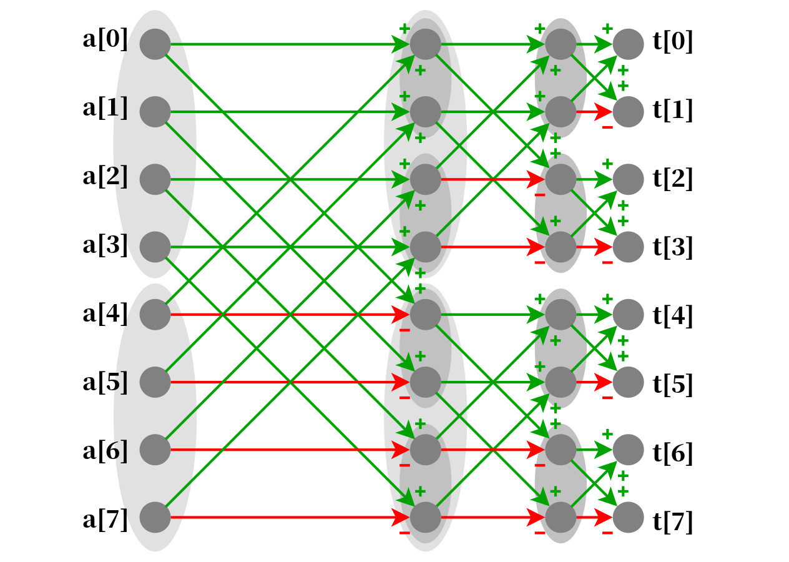

集合变换学习笔记
文章目录
总结一下有关子集变换的笔记。
约定：
- 接下来我们讨论的序列一般指长度为，下标从开始的序列。例如。
- 集合幂级数其实可以理解为以集合为下标的序列。本质上就是普通的序列，只不过是用集合的运算表示位运算。本文中的序列可能指集合幂级数，也可能指普通序列，具体见上下文或者使用的记号。
- 集合占位多项式可以理解为是一个序列，序列中的每个元素都是一个多项式。
快速莫比乌斯变换
子集与
考虑形式化的问题：对于两个序列，我们希望求序列：
用集合幂级数的语言，我们想求的是
其中是集合。接下来的问题与过程形式都使用集合来展现。
考虑做一个高维后缀和的变换。对于集合幂级数定义：
那么我们对和同时做高维后缀和变换得到：
也就是说如果我们能快速计算和的高维后缀和，就可以快速得到的高维后缀和。
在求出了后，我们希望还原成，可以用容斥得到
但其实没必要这么麻烦。我们可以直接倒着写高维后缀和，就可以逆变换回去。
高维后缀和可以写成
for(int i=0;i<n;i++){
for(int j=0;j<(1<<n);j++)
if((j&(1<<i))==0)
s[j]+=s[j+(1<<i)];
}高维后缀差分（逆变换）：
for(int i=0;i<n;i++){
for(int j=0;j<(1<<n);j++)
if((j&(1<<i))==0)
s[j]-=s[j+(1<<i)];
}时间复杂度，空间复杂度。
子集或
对于序列，我们想求
类似的，我们这次定义一个高维前缀和：
则可以推出
于是类似地使用高维前缀和与高维前缀差分即可。
扩域情况
对于集合幂级数而言，每一个元素只有选或者不选两种情况。换言之，二进制数的每个位只有或者两种值。而对于可重集，即进制数来说，也是可以定义集合幂级数以及高维前（后）缀变换的。
以子集与为例，高维后缀和变换可以一般地表示为
取相当于与运算；相当于后缀和操作。
分治多项式乘法
为了理解 FWT 的 xor 变换在干啥，我们先引入分治多项式乘法。
我们有两个定义在加法乘法环下的次多项式，我们想求。设
假定是的幂。则我们有
而我们知道
因此可以只算的乘法，递归下去。时间复杂度
异或卷积
异或卷积问题：对于序列，我们要求
表示位异或运算。
我们首先介绍分治异或卷积算法，然后介绍广泛使用的快速沃尔什变换。了解分治异或卷积算法有利于理解快速沃尔什变换。
分治异或卷积
由于异或具有结合律、交换律，对加法的分配律，则我们定义一个指数通过异或运算合并的多项式来表示该序列：
可以理解为是“异或生成函数”。类似地我们定义出以及，那么有。这里的乘法定义为
为了计算上述异或乘法，我们将多项式前后拆成两半。设
则使用分治可以得到
这里有个特殊之处：由于下标的异或运算使得项的指数被消掉了，因此我们实际上只用递归算两次多项式乘法。我们设
于是可以得到
那么。
时间复杂度就是
事实上，与卷积和或卷积也可以使用分治多项式乘法去理解。
快速沃尔什变换
快速沃尔什变换（Fast Walsh–Hadamard transform，FWT or FWHT）1是用于快速计算一个序列的沃尔什变换的算法。在算法竞赛领域中，大多数时候 FWT 的作用是快速计算异或卷积。
FWT 的本质是把变成了
写成集合幂级数的形式就是
不过直接抛出 FWT 的定义并不能帮助我们理解为什么 FWT 可以加速异或卷积的计算。
通过分治异或卷积理解
为此我们沿用上文中分治异或卷积的描述。
首先我们要更改分治异或卷积的执行顺序，更准确地说是拆分。
分治异或卷积的优化用一句话概括就是：将计算归约到计算和两个长度减半的异或卷积。
在实现的时候设表示将与做异或卷积。
我们不妨考虑将变成，将变成。对于这两个新的多项式：
- 首先我们将其前半部分做卷积，后半部分做卷积，即递归调用和。
- 经过上一步我们计算出了和，然后再根据，还原出的系数表示即可。
考虑第一步和第二步本质上做了什么事情。他们其实执行的计算是差不多的，只不过第二步需要除以而第一步不需要。且第一步我们需要同时变换和，而在第二步里和其实表示的是同一个多项式的高低位。
因此我们有一个想法：我们将第一步的过程和第二步的过程拆开，再将第一步中对和的变换过程拆开！
换言之我们的操作过程变成：
- 先分别递归变换和得到和。
- 这时和里存的分别是个单项式（只有常数项的多项式）。因此我们直接将两者点乘得到。
- 然后递归地自底向上执行第二步的过程，将转化为最后的。
由于这三个过程彼此不相关，只要顺序不要乱就行，因此拆开的正确性有保证。
接下来我们要理解对的变换是 FWT 变换。
以为例，我们分析对的变换：将变成，然后前后两半递归变换。
设，那么我们对于分析的值是如何得到的。
以的情况为例，我们用绿色线表示系数为正，红色线表示系数为负，画出从变换为的示意图：

考虑对的贡献。那么我们只需要考虑对贡献的系数是还是即可，这显然由从到路径上的红色箭头数量的奇偶性决定。为此我们枚举考虑和二进制下第位：
- 如果两者第位是相同的，那么走的就是水平方向的，这时是否为红色箭头取决于这一位是否为；
- 如果两者第位不同，那么得走斜着的箭头，而斜着的箭头是不存在红色的。
综上所述，系数即为。因此，这恰好就是 FWT 变换的定义。
代码实现
FWT 和 IFWT 的递归过程为
异或卷积则是 FWT 后直接做乘法：。
事实上，。因此非递归版本的 IFWT 也可以直接在最后除掉一个。
Trick
有一个小 Trick 就是，如果我们修改，那么等变换回去后，所有项都被增加一个常量（这个常量不一定等于我们修改的差量）。原因如上所述，的贡献永远是正的。
这个性质可以用来解一些要求的题，那么我们给随机一个值，变换回去后把所有项都减掉即可。
子集卷积
我们考虑这样一个问题：求不相交的或卷积：
这个不好求。我们设一个集合占位多项式：
左右两个定义是等价的。
令则可以得到
把这个逆变换得到
这时你会发现，当时有。因此我们取就是答案。
时间复杂度为
在实现的时候有一个技巧，就是在暴力卷积的时候要稍微调整循环顺序，不要一列一列访问内存，不然常数极大。
HDU 5823
首先显然色数是的，因为你每个点染不同颜色一定是成立的。
而显然每种颜色可以染一个独立集。设表示点集是否是一个独立集，表示点集能否使用种颜色染。则
但事实上不是必要条件，它不会影响最优解。因此这就是一个子集或卷积，需要做次，每次卷完要回来转成艾弗森括号运算值。总复杂度。
CF1034 E
求。。
可以使用上述子集卷积做法，复杂度，在这道题中是不能通过的。
设
设，还原一下有。
注意到这个多项式的最低次项的指数是。而我们要的就是所有的和（即）。
设，这题要求对取模。
那么我们可以直接把代入这个多项式，因为是对取模，因此除了常数项之外的其他项的贡献都是。实现的时候开 LL 暴力右移即可。
HDU 5330
这道题虽然名称上是状圧 DP，但在 DP 的过程中是按维度考虑，其实是在做一个高维前缀和的过程。这样就更容易理解它 DP 的含义了。
具体的 DP 方法可以见注释。
AGC034 F
设表示从变到的期望：
且。注意到这是一个异或卷积的形式（），则这个等式可以被表示为
，不满足和式，因此表示为状态。
由于，而在上述异或卷积中每个都和所有的乘起来贡献了一次。因此
于是得到
我们想办法把所有消掉：
于是我们 FWT 之后计算，然后再转回来即可。因为最后的答案是强制，所以在做的时候可以直接乘上逆元。最后使用 FWT 本质的 Trick 即可。
时间复杂度。
1. https://en.wikipedia.org/wiki/Fast_Walsh%E2%80%93Hadamard_transform ↩
修订记录
- 2022年7月8日 第5次修订
- 2021年4月9日 第4次修订
- 2021年3月25日 第3次修订
- 2021年3月25日 第2次修订
- 2020年3月28日 创建文章